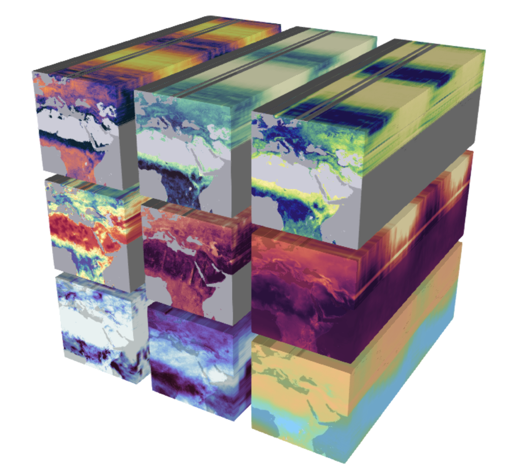

17 NetCDF
In this lesson, we will review a popuar format for working with multi-dimensional datasets called NetCDF. More importantly, NetCDF is the basis on which the Python package xarray is built on.
17.1 Introduction
Efficient and reproducible data analysis begins with choosing a proper format to store our data, particularly when working with large, complex, multi-dimensional datasets. Consider, for example, the following Earth System Data Cube from Mahecha et al. 2020, which measures nine environmental variables at high resolution across space and time. We can consider this dataset large (high-resolution means we have a big file), complex (multiple variables), and multi-dimensional (each variable is measured along three dimensions: latitude, longitude, and time). Additionally, necessary metadata must accompany the dataset to make it functional, such as units of measurement for variables, information about the authors, and processing software used.

Keeping complex datasets in a format that facilitates access, processing, sharing, and archiving can be at least as important as which tools we use to analyze them. In this lesson, we will review a popuar format for working with multi-dimensional datasets called NetCDF. `
17.2 What is NetCDF
NetCDF (network Common Data Form) is a set of software libraries and self-describing, machine-independent data formats that support the creation, access, and sharing of array-oriented scientific data. NetCDF was initially developed at the Unidata Program Center and is supported on almost all platforms, and parsers exist for most scientific programming languages.
The NetCDF documentation outlines that this data format is desgined to be:
Self-describing: Information describing the data contents of the file is embedded within the data file itself. This means that there is a header describing the layout of the rest of the file and arbitrary file metadata.
Scalable: Small subsets of large datasets may be accessed efficiently through netCDF interfaces, even from remote servers.
Portable: A NetCDF file is machine-independent i.e. it can be accessed by computers with different ways of storing integers, characters, and floating-point numbers.
Appendable: Data may be appended to a properly structured NetCDF file without copying the dataset or redefining its structure.
Sharable: One writer and multiple readers may simultaneously access the same NetCDF file.
Archivable: Access to all earlier forms of NetCDF data will be supported by current and future versions of the software.
17.3 Data Model
The NetCDF data model is the way that NetCDF organizes data. This lesson will follow the Classic NetCDF Data Model, which is at the core of all netCDF files.
The model consists of three key components: variables, dimensions, and attributes.
Variables are N-dimensional arrays of data. We can think of these as varying/measured/dependent quantities.
Dimensions describe the axes of the data arrays. A dimension has a name and a length. We can think of these as the constant/fixed/independent quantities at which we measure the variables.
Attributes are small notes or supplementary metadata to annotate a variable or the file as a whole.

17.4 Metadata Standards
The most commonly used metadata standard for geospatial data is the Climate and Forecast metadata standard, also called the CF conventions.
The CF conventions are specifically designed to promote the processing and sharing of files created with the NetCDF API. Principles of CF include self-describing data (no external tables needed for understanding), metadata equally readable by humans and software, minimum redundancy, and maximum simplicity. (CF conventions FAQ)
The CF conventions provide a unique standardized name and precise description of over 1,000 physical variables. To maximize the reusability of our data, it is best to include a variable’s standardized name as an attribute called standard_name. Variables should also include a units attribute. This attribute should be a string that can be recognized by UNIDATA’s UDUNITS package. In these links you can find:
a list of the units found in the UDUNITS database maintained by the North Carolina Institute for Climate Studies.
17.5 Acknowledgements
The NetCDF section in this lesson is adapted from the lesson I prepared for the Arctic Data Center’s course on scalable computing:
S. Jeanette Clark, Matthew B. Jones, Samantha Csik, Carmen Galaz García, Bryce Mecum, Natasha Haycock-Chavez, Daphne Virlar-Knight, Juliet Cohen, Anna Liljedahl. 2023. Scalable and Computationally Reproducible Approaches to Arctic Research. Arctic Data Center. doi:10.18739/A2QF8JM2V